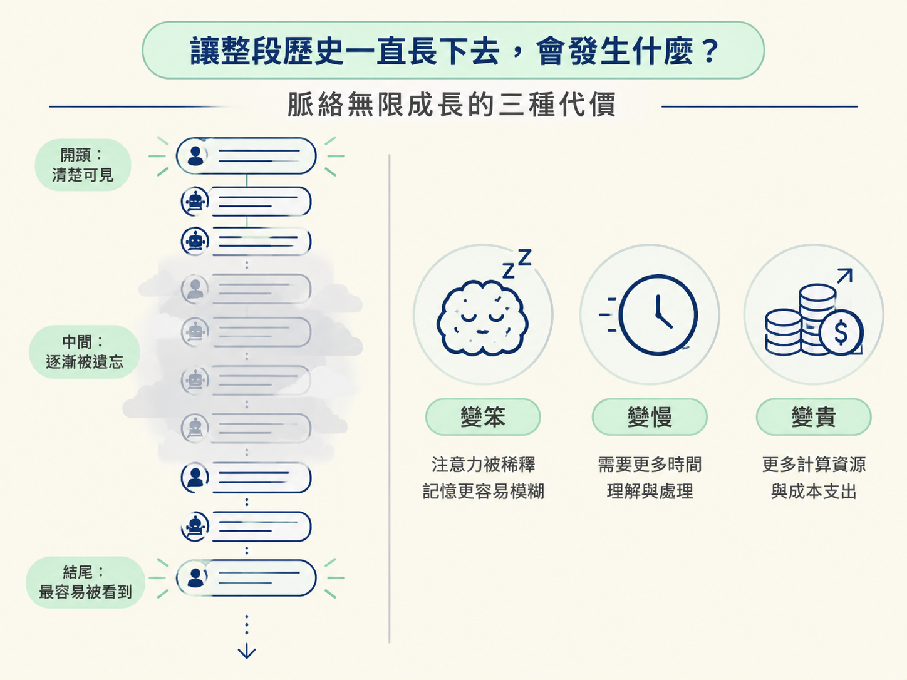
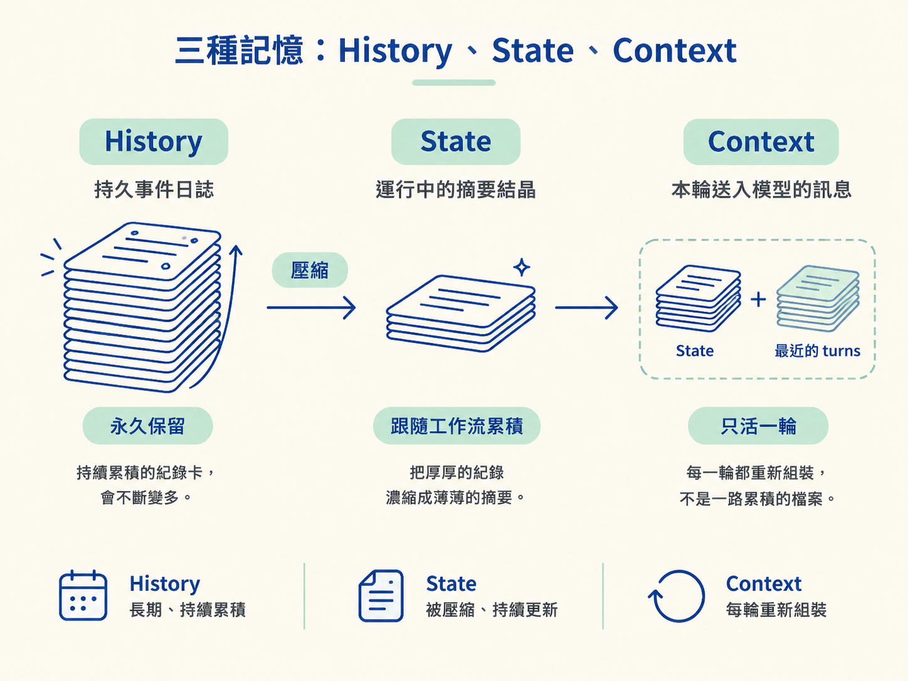

打開聊天產品，你可以一路往上滑，看到從第一句到剛剛那句的完整紀錄。看起來，模型似乎也把這些內容全都記在腦中。
其實不是。模型每一輪真正看到的，是 harness 特別組出來的一個子集。早期內容可能已經被壓成幾行摘要，也可能根本沒有出現在這次送出的訊息裡。
使用者看到的是 History；模型看到的是 Context。兩者之間的落差，就是這一課要補上的橋。
這一課要先把三個容易混在一起的概念分開：History（持久事件日誌）、State（壓縮摘要）與 Context（這一輪送進模型的內容）。同時，你也會看到為什麼脈絡無限成長，會讓模型變笨、變慢，還變貴。
如果 harness 什麼都不做，把所有對話原封不動地接到後面，三種代價會同時出現：
| 代價 | 發生什麼 | 為什麼 |
|---|---|---|
| 變笨 | 中間的內容等於被遺忘 | 模型對 context 的注意力不是均勻的：開頭與結尾通常較可靠，夾在中間的內容最容易被忽略 |
| 變慢 | 每一輪的回應時間拉長 | 每一輪都要重新處理整段輸入；輸入越長，就越難維持速度 |
| 變貴 | 帳單跟著 context 一起長 | 輸入 token 會計費，而且每多一輪，累積的輸入就再增加一次 |
「中間被遺忘」最反直覺。你可能會想：既然內容已經放進 context，模型怎麼可能沒看到？但 attention（注意力）不是資料庫查詢，而是一種會受到長度稀釋的加權。文件放在中段，就像簡報夾在中場休息後的某一頁，最容易被快速略過。

遇到脈絡太長，第一個念頭通常是換用 context window 更大的模型。但這只能延後問題，不能解決問題：
所以真正的問題不是「視窗夠不夠大」，而是「誰來決定模型此刻需要看到什麼」。這個決定不能交給模型自己，因為模型不知道哪些內容根本沒有被送進來。
先把三者分開，後面的設計才不會混亂：
| 名稱 | 它是什麼 | 壽命 | 誰在看 |
|---|---|---|---|
| History（歷史） | 持久化的事件日誌：每一件事都留在 durable 儲存裡 | 永久，除非主動清空 | 系統、審計、重放 |
| State（狀態） | 壓縮後的 running summary：舊內容留下來的結晶 | 跟著工作流累積 | harness 自己 |
| Context（脈絡） | 這一輪真正送進模型的 messages 陣列 | 只活一輪 | 模型 |
三者的流程可以想成一條記憶管線：History 會持續膨脹，因此需要被壓縮成 State；接著，State 再加上最近尚未壓縮的 turns，組成這一輪的 Context。

每次使用者送出訊息，Context 都會重新組裝。它不是一份一路累積、永遠不重建的檔案，而是每一輪即時重算的結果。
因此，context assembly（脈絡組裝）在某些團隊裡會成為專門的工作。模型每一輪看到什麼，會直接影響它的行為與成本。
接下來會把這條管線拆成兩個可重用的積木：
兩個積木都會放在 harness/memory.ts。這支檔案裡有兩個重要旋鈕：maxTokens 與 keepContextTokens。
課程會故意把它們設得很小，例如上限 500、保留 200，讓你跑一次 demo 就能直接看到壓縮發生。真實系統的數值通常會大得多，但運作機制相同。
// harness/memory.ts 的兩個旋鈕（課程中故意調小，讓壓縮看得見）
const maxTokens = 500; // 超過就該壓縮
const keepContextTokens = 200; // 壓到低於這裡為止還有一個實作細節要記住：課程中的 token 估算很粗糙，只是把字數除以四左右。真實系統應改用與模型相同的 tokenizer（分詞器／編碼器），否則估算結果可能和模型實際看到的 token 數對不上。
把這個模型套回自寫的 ReAct loop，問題會變得很具體：你的 loop 是不是把所有歷史都無條件塞進 messages？
如果是，那它不是「還沒壞」，而是「還沒長到會壞」。預算驅動、壓縮舊內容，以及每輪重新組裝 Context，都是 runtime 必須處理的決策，與使用哪種語言無關；Java runtime 也一樣會遇到。